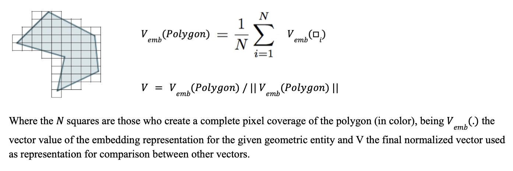

Appendix — Geospatial Data Structures and Operations
This appendix gathers, in a single place, the geospatial concepts, formats and operations actually used throughout this repository. It is not a general GIS reference, just a quick map back to the ideas and code paths this project depends on, for anyone who needs a refresher while reading the previous chapters.
Geospatial Data Structures
Vector data: points, lines and polygons
Vector data represents discrete geometric objects with exact coordinates: Point, LineString (and MultiLineString), and Polygon (and MultiPolygon). Most of what this repository handles is vector data:
- Crime incidents are Points, built from raw lat/lon columns with
gpd.points_from_xy. - Streets are LineStrings (
09e.shp), later split corner to corner into shorter segments. - Municipalities, AGEBs and the CDMX boundary are Polygons (
09m.shp,09a.shp,09ent.shp).
Raster data (pixel grid)
Raster data represents a phenomenon as a regular grid of cells (pixels), each with one or more band values, instead of discrete geometric objects. AlphaEarth embeddings are natively distributed in this form —a vector of 64 values per 10m pixel, as multiband GeoTIFFs. src/etl/process_embeddings.py is what converts that raster into the tabular rows (lon, lat, A00..A63) the rest of the pipeline works with.

File formats used in this repository
- Shapefile (
.shp, plus its companion files.shx/.dbf/.prj) — the classic multi-file vector format; used for each INEGI political division layer underdata/spatial/pd/. - GeoParquet — parquet files with a geometry column, read and written with
geopandas.read_parquet/to_parquet; used for the training sets and the processed AlphaEarth pixel tables, since it keeps geometry, embeddings and attributes in a single columnar file, suitable for partitioning. - GeoJSON — a text/JSON vector format; the output of the point-to-geometry aggregation step (
src/etl/assign_point_to_geometry.py,driver="GeoJSON"). - Flat CSV/parquet with lat/lon columns — not really a geometry format, just two floating-point columns promoted to Point geometries on demand with
gpd.points_from_xywhenever a spatial operation is actually needed.
H3: global discrete grid
H3 divides the globe into hexagonal cells at multiple resolutions, each with a unique cell id —a discrete alternative to a raw lat/lon grid. h3_heatmap from src/eda/core.py uses it (h3.latlng_to_cell, h3.cell_to_latlng) to group crime points into hexagonal cells for a density heatmap, which reads better than a raw point cloud once the number of points grows.

Coordinate Reference Systems (CRS)
Def (CRS): a Coordinate Reference System defines how the numerical coordinates of a geometry map to real positions on Earth —its datum, its projection (if it has one) and its units.

- Geographic CRS (e.g.
EPSG:4326/ WGS84) — coordinates are (longitude, latitude) in degrees. Convenient for storage and for global data, but a degree is not a constant unit of distance (a degree of longitude shrinks toward the poles), so it is the wrong CRS for distance, area or buffer computations. - Projected CRS (e.g.
EPSG:6372,EPSG:3857) — coordinates are in a flat unit, usually meters, obtained by projecting the curved Earth onto a flat surface. Correct for distance-based work, at the cost of some distortion that grows with the area covered.
CRSs actually used in this repository:
EPSG:4326— the native/storage CRS for the crime incident points, the AlphaEarth embeddings, and most of the raw shapefiles.EPSG:6372(Mexico ITRF2008 / LCC, meters) — used to reproject the crime points before DBSCAN clustering (src/eda/core.py), since DBSCAN’sepsis a real distance and only makes sense in meters, not degrees.EPSG:3857(Web Mercator) — used to reproject the street network and the CDMX boundary before drawing a CartoDB basemap withcontextily(src/visuals/flash_highlight_showcase.py), since web tiles are always served in this projection.
Reprojecting a GeoDataFrame is a single call:
gdf_3857 = gdf.to_crs(3857)A recurring source of bugs in this kind of project is combining two layers that are in different CRSs, or measuring distance/area in a geographic one —always check gdf.crs before joining, buffering or plotting a basemap under two layers.
Fundamental Spatial Operations
Points from coordinates
gpd.GeoDataFrame(df, geometry=gpd.points_from_xy(df["lon"], df["lat"]), crs="EPSG:4326")Used everywhere a CSV or parquet only brings lat/lon columns instead of a real geometry column (src/etl/assign_point_to_geometry.py, src/etl/get_training_sets.py).
Spatial join (sjoin) and nearest-neighbor join (sjoin_nearest)
Def: a spatial join attaches attributes from one layer to another based on a spatial predicate (intersects, contains, nearest, …) instead of a shared key column.
sjoin(..., predicate="intersects")— assigns the crime points to the AGEB polygon within which they fall (agg_points_to_geometry, POLYGON branch).sjoin_nearest(...)— assigns each crime point to its nearest street segment instead of requiring it to fall exactly on the line (agg_points_to_geometry, LINESTRING branch); it is also used to attach the AlphaEarth pixels and the MZA socio-demographic centroids to the street geometries.
Buffering
.buffer(distance) expands a geometry outward by distance (in the units of the layer’s own CRS), turning a line or a point into a polygon. It is used to convert a street LINESTRING into a corridor-like polygon, so that it can be treated as an area for pixel coverage aggregation (src/etl/assign_point_to_geometry.py).

Centroid
.centroid returns the central point of a geometry. It is used to convert the MZA (block) polygons into unique representative points before joining them to the streets (src/etl/get_socioecon_data.py), and to place a single marker for a street segment in the animated demos (src/visuals/flash_highlight_showcase.py).

Splitting geometries
- At intersections —
split_streets_at_intersectionsfromsrc/utils/geom.pywalks each street line, uses a spatial index to find nearby candidate lines, computes their exact intersection points, and cuts the line at each of them withshapely.ops.split. This is how the raw street network becomes the corner-to-corner segments used as the spatial unit throughout the whole crime modeling pipeline. - By length —
split_gdf_by_lengthusesshapely.ops.substringto cut any line longer than a threshold into bounded pieces.
Spatial index (.sindex)
An R-tree index over a layer’s bounding boxes, so that “which geometries are near this one?” is resolved in approximately \(O(\log n)\) instead of comparing against every other geometry one by one. This is what keeps split_streets_at_intersections and the nearest-street lookups tractable at CDMX scale (hundreds of thousands of segments).
Bounding box filtering
A cheap prefilter before a more expensive operation: keep only the rows whose coordinates fall within a rectangle —either directly, df["lat"].between(lat_lo, lat_hi) & df["lon"].between(lon_lo, lon_hi) (geo_split from src/eda/core.py), or with geopandas’ own .cx[xmin:xmax, ymin:ymax] indexer.
Aggregation by geometry
Spatial join, then groupby, then merge the polygons back —the pattern behind every “crime count by district/street/year” table in this repository (cvegeo_aggregate, street_aggregate in src/eda/core.py).
Raster to Vector Aggregation (Pixel Coverage)
This is the central geospatial technique of the whole project: converting a raster (the AlphaEarth pixel grid) into a single vector for a vector geometry (a street, a polygon).

The recipe is the same regardless of whether the target geometry is a polygon or a line (src/etl/assign_point_to_geometry.py, src/etl/get_training_sets.py):
- Find every pixel (its center, treated as a point) that touches the target geometry.
- Average the 64-dimensional embedding vectors of that coverage.
- L2-normalize the averaged vector, so that the aggregate lands back on the unit sphere (\(S^{63}\)) on which AlphaEarth embeddings are natively defined —the average of unit vectors is not itself a unit vector.
normalize(df[feat_cols], norm="l2", axis=1)Streaming large rasters
The raw AlphaEarth GeoTIFFs are too large to be loaded whole into memory. tif_to_parquet_partition from src/etl/process_embeddings.py reads them in fixed-size sliding windows (rasterio.windows.Window), masks the nodata pixels, recovers the true (lon, lat) of each pixel with rasterio.transform.xy, and appends each window as a chunk to a partitioned parquet dataset —converting an arbitrarily large raster to tabular form in bounded memory.
Large-Scale Geospatial-Tabular Storage: Hive Partitioning
The processed embeddings (tens of millions of rows, at whole-city level) are stored as a Hive-style partitioned parquet dataset —one subfolder per year=/CVE_MUN= combination— so that the code can read, or sample, only the partitions it actually needs:
dataset = pyarrow.dataset.dataset(path, format="parquet", partitioning="hive")
dataset.count_rows() # metadata only, no data read
fragment.to_table(columns=[...]) # one partition at a timesrc/visuals/embedding_structure_showcase.py uses exactly this to draw a random, representative sample of the whole city without ever keeping the full ~15.9M-row dataset in memory at once.
Spatial Clustering and Density
DBSCAN
Def: DBSCAN is a density-based clustering algorithm —a point with at least min_samples neighbors within a radius eps anchors a cluster; everything else is labeled as noise. Because eps is a real distance, DBSCAN has to run over a projected CRS (EPSG:6372 here), never over raw lat/lon degrees (gif_dbscan_by_year from src/eda/core.py).
Concave / convex hull
Used to outline the shape of a cluster once DBSCAN has assigned the labels: shapely.concave_hull, falling back to the plain .convex_hull for very small clusters or where concave_hull is not available.
Kernel Density Estimation (KDE)
A smoothed density surface over the point coordinates (seaborn.kdeplot), used as a lighter alternative to clustering when the goal is just to see where incidents concentrate, not to assign each point a discrete label.
Spherical K-means
Not a spatial operation in the strict coordinate sense —it groups embedding vectors, not (lat, lon) points— but it shares the unit-sphere logic of the pixel aggregation step: the features are L2-normalized first, so that the Euclidean distance between cluster centroids becomes a monotone function of the cosine similarity. See src/unsupervised/clustering_kmeans.py.
Basemaps
For a static map that needs real-world visual context (streets, neighborhoods, labels) instead of just bare outlines, contextily.add_basemap fetches CartoDB/OpenStreetMap tiles and draws them behind the vector layers —but only once everything is in Web Mercator (src/visuals/flash_highlight_showcase.py):
gdf_3857 = gdf.to_crs(3857)
gdf_3857.plot(ax=ax)
contextily.add_basemap(ax, source=contextily.providers.CartoDB.Positron, crs=gdf_3857.crs)Choropleth Maps
Def: a choropleth map fills each polygon or line with a color based on an attribute value, gdf.plot(column="y_cnt", cmap=..., vmin=..., vmax=...), instead of plotting raw points. It is used throughout this repository for incident count maps, risk level maps and cluster maps —always paired with a fixed color scale (vmin/vmax, or a BoundaryNorm for discrete levels), so that the panels stay comparable across frames and years.